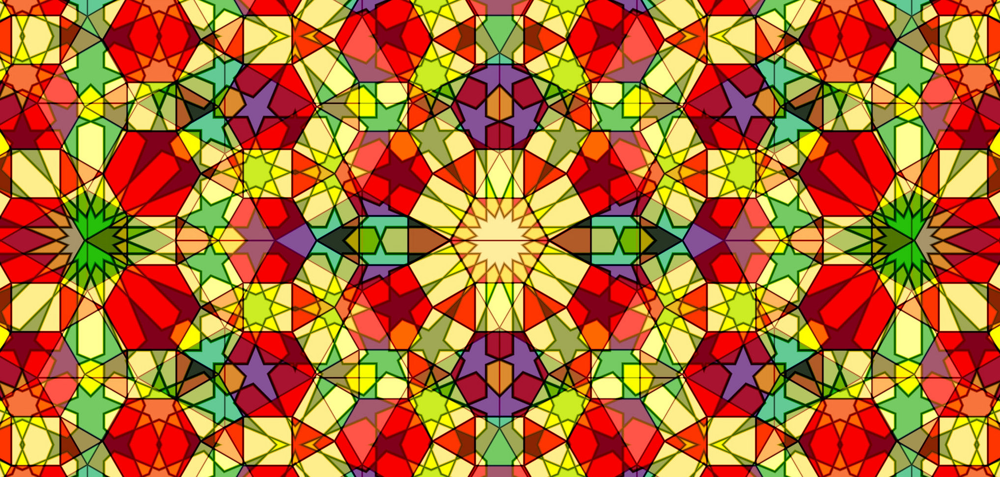
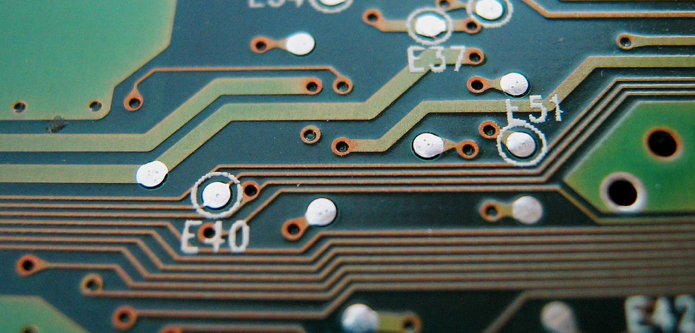

I recently completed my PhD in mathematics at the University of Vienna where I was supervised by Christian Krattenthaler. My research focused on the interplay between certain combinatorial structures and statistical physics. I have a growing interest in statistical machine learning and data science.
On this site you will find a collection of my articles and written work, slides from selected talks and presentations, as well as information about other programming/computer science projects that I have been involved in.
Feel free to contact me on my email address.

PHD THESIS
Rhombus tilings and electrostatics, accepted November 2017 [PDF].
PAPERS
- Enumerating some symmetry classes of rhombus tilings of holey hexagons (extended abstract), DMTCS proc. 27th Int. Conf. Formal Power Series and Algebraic Combinatorics (FPSAC), 2015 [PDF].
- Three interactions of holes in two dimensional dimer systems, Electronic Journal of Combinatorics, 2017 [PDF] [arXiv].
- Interactions between interleaving holes in a sea of unit rhombi, available on the arXiv [PDF] [arXiv].
- Holey matrimony: marrying two approaches to a dimer problem (extended abstract), to appear in the proceedings of FPSAC 2017 [PDF].
- Inverting the Kasteleyn matrix for sub-graphs of the hexagonal lattice, available on the arXiv [PDF] [arXiv].
TALKS
- Interactions of holes in two dimensional dimer systems, SIAM conference on Algebraic Geometry, Daejeon, Korea 2015 [PDF].
- Symmetric rhombus tilings of holey hexagons and the method of images, 76th Seminaire Lotharingien de Combinatoire, Ottrot, Strasbourg 2016 [PDF].
- Holey matrimony: marrying two approaches to the dimer problem, ALEA Young Researchers Workshop, TU Wien, Vienna, Austria 2016 [PDF].
OTHER WORK
- The arithmetic-geometric mean of Gauss, masters thesis, 2012 [PDF].
- Computation of the arithmetic-geometric mean, masters project in scientific computing, 2012 [PDF].

INTELLIGENT INTERFACES FOR ACCELERATING INTERMEDIATE PIANO LEARNING
Between September 2012 and June 2013 I was a research assistant on a project that sought to develop new technologies to assist intermediate piano learners. Supervised by Prof. Elaine Chew from the centre for digital music and working in conjunction with Yamaha R&D, my research focussed on developing algorithms that automatically generate fingerings for pieces of music, as well as creating new metrics that measure the difficulty level of a piece of music.
INDOOR POSITIONING APP
Unified is an iPhone app that enables you to find your friends inside crowded venues using bluetooth technology. Over the summer of 2015 I completely re-designed and implemented the system that pinpoints a user's location by processing and analysing bluetooth signals from iBeacons that are strategically placed inside a venue. This technology was successfully installed in a number of high profile clubs and bars in Ibiza and has been further adapted for conferences and events.
TILINGS
You'll have noticed that on entering this website the background became covered in diamond shapes. This is known as a rhombus tiling of a region, and these objects have been studied in one form or another for over 100 years.
Much of my research over the past four years has focused on finding formulas that count in how many ways different regions can be covered in these tiles.
Imagine we fix a hexagon (so that it cannot be rotated or reflected or moved in any way, and therefore has a top and a bottom, imagine it was drawn on a wall for example). If I give you a set of three diamond shaped tiles, where all sides of the tiles are the length of one side of the hexagon, then in how many ways can you fit the tiles inside the hexagon?
The answer is 2, since the tiles can meet along a vertical edge either comes from the bottom of the hexagon or otherwise from the top. If we choose to describe the length of the side of the hexagon in terms of how many tiles may fit edgewise along one of its sides, then the number of tilings of a hexagon of side length one is 2.
There is a beautiful formula that was discovered by Percy Alexander MacMahon in 1916 that tells you exactly how many possible ways a set of rhombus tiles fit completely inside a hexagon of any size. Every time you click the Tile the page button a random tiling is generated and the background is a section of this tiling.
The total number of random tilings from which each background could be taken is: 2494182614850629334906980002072655276608016155634366708626420896704131144435653399498891756485857604547775408281487500
DUAL SPACE
Click on the Dualise button in the navigation bar. You'll notice that the rhombus tiles have been replaced with white and grey circles that are connected with lines- this is known as a dual representation of a tiling.
A hexagon of side length one may be thought of as a collection of six equilateral triangles (triangles that have all sides the same length) that all meet at one point and do not overlap. Three of these triangles point to the left, while the other three point to the right. In the same way, a rhombus is formed from a pair of equilateral triangles, one left-pointing and one right-pointing.
Suppose we draw white circles inside all left-pointing triangles and grey circles inside all right-pointing ones. Forming a rhombus with two tiles corresponds to drawing an edge between a white circle and one of its neighbouring grey circles, so the two rhombus tilings of the hexagon of side length one represent the two different ways in which we can join white circles to grey ones inside that same hexagon when we view it as a collection of six triangles.
A collection of edges between circles in a hexagon is called a perfect matching of the vertices (all the grey circles are perfectly matched with the white ones). Every hexagon can be drawn as a collection of equilateral triangles all stuck together so there are no gaps between them, so every rhombus tiling of a hexagon can be represented as a perfect matching between the white and grey circles that you can put inside the left and right pointing triangles. When you click the Dualise button you switch between the two equivalent representations of one tiling.